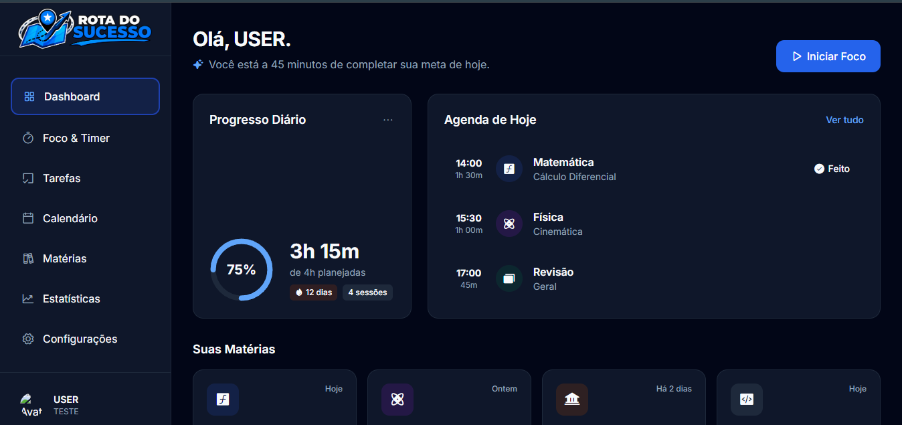
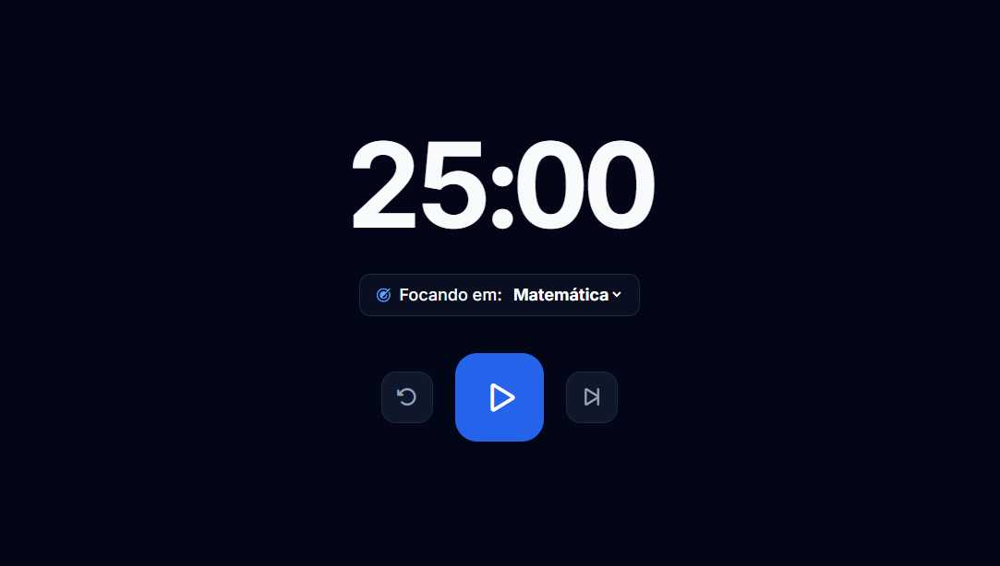
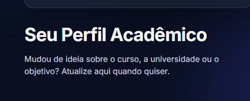

Um espaço digital silencioso para organizar sua mente e alcançar seus objetivos.
Gerencie disciplinas, cronometre sessões de foco profundo e acompanhe sua evolução acadêmica em uma interface sem distrações.

Visão Geral do Painel
Acompanhe suas disciplinas ativas e métricas de desempenho diárias em um só lugar.

Modo Foco Total
Cronômetro integrado para aplicar técnicas como Pomodoro e evitar distrações.

Perfil Acadêmico
Informações adaptadas aos seus vestibulares e objetivos de aprendizado.
Tudo o que você precisa para evoluir nos estudos
Ferramentas pensadas para eliminar a procrastinação e otimizar o seu aprendizado diário.
Perfil Personalizado
Monte seu perfil focado nos seus maiores desafios: seja passar no ENEM, vestibulares, concursos ou organizar sua rotina escolar.
Foco e Produtividade
Cronometre sessões de estudo sem distrações e mantenha o ritmo ideal para absorver conteúdos complexos com facilidade.
Acompanhamento
Visualize seu desempenho, gerencie suas disciplinas e saiba exatamente onde direcionar sua energia para conquistar aprovações.
Pronto para dar o próximo passo na sua jornada?
Crie sua conta em poucos segundos, defina seus objetivos e descubra uma nova forma de estudar.
Criar minha conta agora